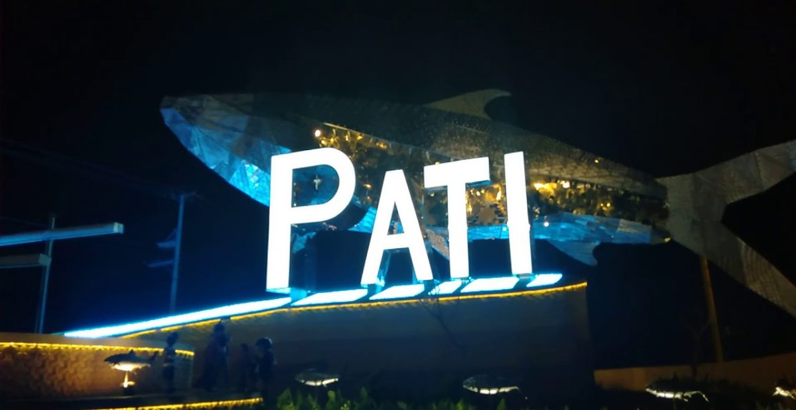
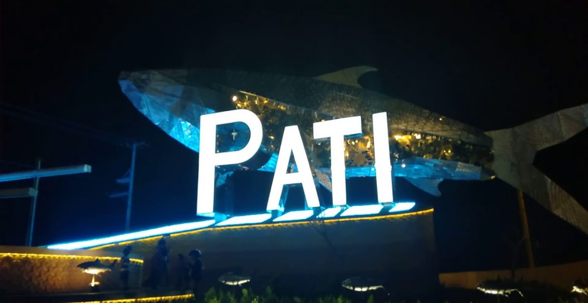
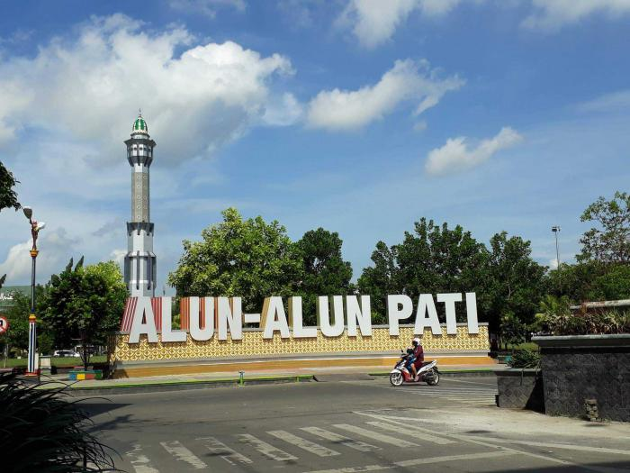
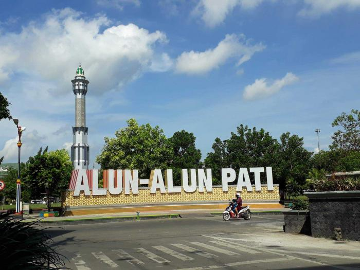

Pati (bahasa Jawa: ꦥꦛꦶ, translit. Pathi) adalah sebuah kabupaten di Provinsi Jawa Tengah, Indonesia. Ibu kotanya adalah Pati. Kabupaten ini terkenal dengan semboyan Pati Bumi Mina Tani. Penduduk kabupaten Pati berjumlah 1.324.188 jiwa pada akhir tahun 2020,[4] dan 1.348.397 jiwa di tahun 2021.
Kabupaten Pati berpangkal dari beberapa gambar yang terdapat pada Lambang Daerah Kabupaten Pati yang sudah disahkan dalam Peraturan Daerah No. 1 Tahun 1971 yaitu gambar yang berupa: "keris rambut pinutung dan kuluk kanigara". Menurut cerita rakyat yang terdapat juga pada kitab Babat Pati dan kitab Babat lainnya, dua pusaka yaitu "keris rambut pinutung dan kuluk kanigara" merupakan lambang kekuasan dan kekuatan yang juga merupakan simbul kesatuan dan persatuan. Barangsiapa yang memiliki dua pusaka tersebut, akan mampu menguasai dan berkuasa memerintah di Pulau Jawa. Adapun yang memiliki dua pusaka tersebut adalah Raden Sukmayana pembesar dari Majasemi andalan Kadipaten Carangsoka.
Mayoritas penduduk Pati berprofesi petani, maka dari itu kota ini dijuluki dengan Pati Bumi Mina Tani. Bisa dikatakan 70 persen hamparan wilayahnya adalah sawah. Seperti di desa saya, ketika masuk dari gapura desa, pemandangannya adalah sawah dan jika akan menyeberang ke desa lain, pemandangan kanan dan kiri masih sawah. Padahal desa saya nggak terletak di daerah yang pelosok, hanya dua kilometer dari Simpang Lima Pati.
Julukan ini yang lalu dijadikan slogan resmi Kota Pati. Di jalan pantura sebelum kita memasuki wilayah Kota Pati, kita akan disambut dengan tulisan “Selamat Datang di Pati Bumi Mina Tani”. Bukan hanya ada di satu titik, tapi ada di empat titik: utara, selatan, timur, dan barat semuanya ada. Nah, karena kota di Indonesia punya kebiasaan menjadikan slogan jadi singkatan, ini arti slogan Kota Pati.
B = Berdaya, adalah berkemampuan untuk mewujudkan cita-cita.
U = Upaya, merupakan usaha masyarakat dalam mencapai cita-cita yang diharapkan.
M = Menuju, merupakan arah/tujuan yang ingin dicapai sesuai identitas daerah.
I = Identitas Pati, merupakan ciri kekhususan yang sebenarnya sehingga masyarakat dengan segala daya dan upaya ingin menemukan jati dirinya sendiri.
M = Makmur, merupakan cita-cita hidup yang diidam-idamkan seluruh bangsa yang sudah ada sejak bangsa itu lahir.
I = Ideal, merupakan harapan masyarakat yang diinginkan agar dicapai suatu keadaan yang selalu dapat menyesuaikan dengan perkembangan zaman.
N = Normatif, merupakan harapan masyarakat dan pemerintah yang ingin mencapai tata kehidupan senantiasa berpihak pada norma-norma yang berlaku.
A = Adil, merupakan cita-cita bangsa yang didambakan sesuai dengan Pancasila dan Undang-undang Dasar 1945.
T = Tertib, suatu keadaan yang diharapkan, yaitu tertib pemerintah dan tertib masyarakatnya sehingga kedua-duanya harus saling mendukung tanpa ada yang bertentangan.
A = Aman, adalah suatu keadaan di mana masyarakat benar-benar merasa aman dan merasa terlindungi dalam hidupnya sehari-hari sebagai warga masyarakat.
N = Nyaman, adalah suatu keadaan di mana masyarakat merasa enak, sejuk, sehat, dan segar sehingga memungkinkan masyarakat betah tinggal di lingkungannya.
I = Indah, juga sebagai cita-cita pendukung yaitu kondisi estetika dambaan masyarakat
 

 
